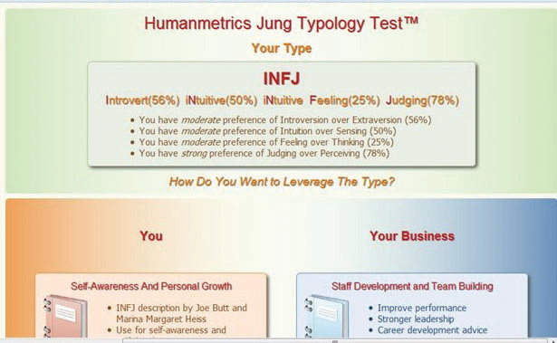
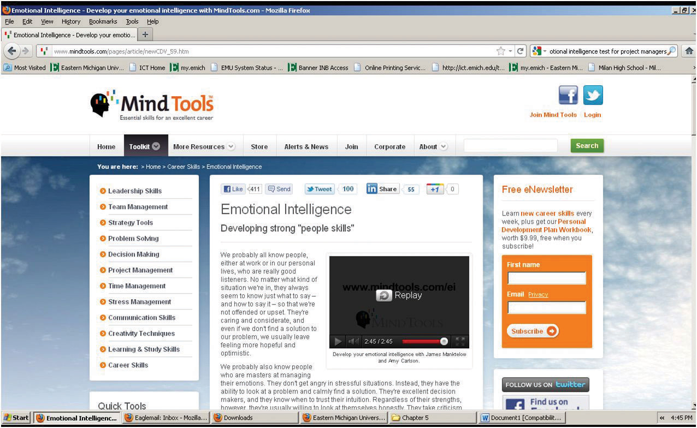
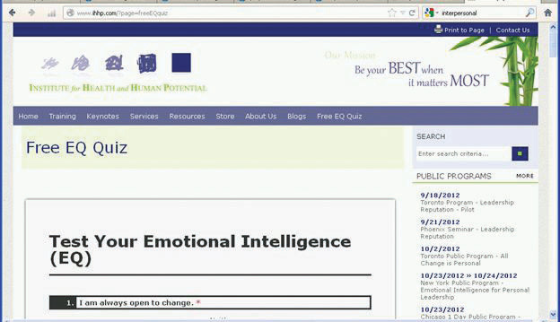
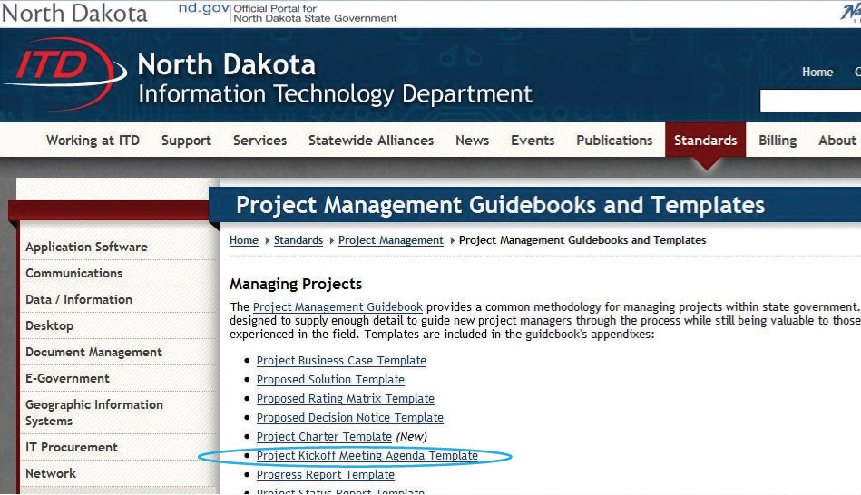

Project management encompasses the concepts of management and leadership. Although leadership and management research have made distinctions between the two concepts, the project management profession has integrated the two concepts, and project management refers to the leadership and management needed to lead and manage a project. A project manager leads people and manages work processes.
Project management is both art and science. It is the art of creating a vision of success, building a project team, and developing a project story. Project leadership encompasses the personality, leadership style, and leadership skills of the project manager. Project management also includes formulas and processes for calculating the critical path, developing goals, and managing meetings.
Some projects are more leader sensitive,Albert A. Einsiedel, “Profile of Effective Project Managers,” Project Management Journal 18 (1987): 5. and the success of the project is more dependent on the leadership skills of the project manager. Leadership is a function of the project manager’s leadership style, personality type, and understanding of emotions. Management is mastery of the skills needed to organize and execute the work of the project. Each project includes challenges that require both leadership and management. The leadership and management skills needed are related to the project complexity profile. In general, more complex projects require a greater degree of leadership and management skill. This chapter will review various leadership approaches and management skills.
Working with other people involves dealing with them both logically and emotionally. A successful working relationship between individuals begins with appreciating the importance of emotions and how they relate to personality types, leadership styles, negotiations, and setting goals.
Emotions are neither positive nor negative. Emotions are both a mental and physiological response to environmental and internal stimuli. Leaders need to understand and value their emotions to appropriately respond to the client, project team, and project environment. Daniel GolemanDaniel Goleman, Emotional Intelligence (New York: Bantam Books, 1995). discussed emotional intelligence quotient (EQ)Ability to sense, understand, and effectively apply the power and acumens of emotions. as a factor more important than IQ in predicting leadership success. According to Robert Cooper and Ayman Sawaf, “Emotional intelligence is the ability to sense, understand, and effectively apply the power and acumens of emotions as a source of human energy, information, connection, and influence.”Robert K. Cooper and Ayman Sawaf, Executive EQ, Emotional Intelligence in Leadership and Organizations (New York: Perigree Book, 1997), xiii.
Emotional intelligence includes the following:
Emotions are important to generating energy around a concept, to building commitment to goals, and to developing high-performing teams. Emotional intelligence is an important part of the project manager’s ability to build trust among the team members and with the client. It is an important factor in establishing credibility and an open dialogue with project stakeholders. Emotional intelligence is a critical ability for project managers, and the more complex the project profile, the more important the project manager’s EQ becomes to project success.
Personality types refer to the difference among people. Understanding your personality type as a project manager will assist you in understanding your tendencies and strengths in different situations. Understanding personality types can also help you understand the contributions of various members of your team and the various needs of your client.
There are a number of tools for helping people assess personality types, such as the DISCAcronym for a personality assessment tool, where DISC stands for dominance, influence, steadiness, and conscientiousness. acronym, which stands for the following:
These four dimensions are then grouped to represent various personality types.
The Myers-Briggs Type Indicator (MBTI)Personality assessment tool that uses four pairs of letters: E-I, S-N, T-F, and J-P. is one of most widely used tools for exploring personal preference, with more than two million people taking the MBTI each year. The MBTI is often referred to as simply the Myers-Briggs. It is a tool that can be used in project management training to develop awareness of preferences for processing information and relationships with other people.
Based on the theories of psychologist Carl Jung, the Myers-Briggs uses a questionnaire to gather information on the ways individuals prefer to use their perception and judgment. Perception represents the way people become aware of people and their environment. Judgment represents the evaluation of what is perceived. People perceive things differently and reach different conclusions based on the same environmental input. Understanding and accounting for these differences is critical to successful project leadership.
The Myers-Briggs identifies sixteen personality types based on four preferences derived from the questionnaire. The preferences are between pairs of opposite characteristics and include the following:
Sixteen Myers-Briggs types can be derived from the four dichotomies. Each of the sixteen types describes a preference: for focusing on the inner or outer world (E-I), for approaching and internalizing information (S-I), for making decisions (T-F), and for planning (J-P). For example, an ISTJ is a Myers-Briggs type who prefers to focus on the inner world and basic information, prefers logic, and likes to decide quickly.
It is important to note that there is no best type and that effective interpretation of the Myers-Briggs requires training. The purpose of the Myers-Briggs is to understand and appreciate the differences among people. This understanding can be helpful in building the project team, in developing common goals, and communicating with project stakeholders. For example, different people process information differently. Extraverts prefer face-to-face meetings as the primary means of communicating, while introverts prefer written communication. Sensing types focus on facts, and intuitive types want the big picture.
On larger, more complex projects, some project managers will use the Myers-Briggs as a team-building tool during project start-up. This is typically a facilitated work session where team members take the Myers-Briggs and share with the team how they process information, what communication approaches they prefer, and what decision-making preferences they have. This allows the team to identify potential areas of conflict, develop communication strategies, and build an appreciation for the diversity of the team.
One project team in South Carolina used color-coded badges for the first few weeks of the project to indicate Myers-Briggs type. For this team, this was a way to explore how different team members processed information, made decisions, and took action.
Some people use a description of personality types that is based on research that shows that some functions of thinking and perception are localized on the left or right side of the brain. In this system, the left side of the brain is associated with recalling specific facts and definitions and performing calculations, while the right side of the brain is associated with emotions, estimates, and comparisons. The attraction of this system is that it categorizes people into just two categories—left or right brain dominance—but it should be used cautiously to avoid oversimplification.
Understanding the differences among people is a critical leadership skill. This includes understanding how people process information, how different experiences will influence the way people perceive the environment, and how people develop filters that allow certain information to be incorporated while other information is excluded. The more complex the project, the more important the understanding of how people process information, make decisions, and deal with conflict.
Leadership is a function of both the personal characteristics of the leader and the environment in which the leadership must occur. Several researchers have attempted to understand leadership from the perspective of the characteristics of the leader and the environment of the situation. Robert Tannenbaum and Warren SchmidtRobert Tannenbaum and Warren Schmidt, “How to Choose a Leadership Pattern,” Harvard Business Review 36 (1958): 95–101. described leaders as either autocratic or democratic. Harold LeavittHarold Leavitt, Corporate Pathfinders (New York: Dow-Jones-Irwin and Penguin Books, 1986). described leaders as pathfinders (visionaries), problem solvers (analytical), or implementers (team oriented). James MacGregor BurnsJames MacGregor Burns, Leadership (New York: Harper & Row, 1978). conceived leaders as either transactional (focused on actions and decisions) or transformational (focused on the long-term needs of the group and organization).
Fred FiedlerFred E. Fiedler, “Validation and Extension of the Contingency Model of Leadership Effectiveness,” Psychological Bulletin 76, no. 2 (1971): 128–48. introduced contingency theory and the ability of leaders to adapt their leadership approach to the environment. Most leaders have a dominant leadership style that is most comfortable. For example, most engineers spend years training in analytical problem solving and often develop an analytical approach to leadership.
A leadership style reflects personal characteristics and life experiences. Although a project manager’s leadership style may be predominantly a pathfinder (using Leavitt’s taxonomy), most project managers become problem solvers or implementers when they perceive the need for these leadership approaches. The leadership approach incorporates the dominant leadership style and Fiedler’s contingency focus on adapting to the project environment.
No particular leadership approach is specifically appropriate for managing a project. Each project has a unique set of circumstances because, by definition, projects are unique endeavors. The leadership approach and the management skills required to be successful vary depending on the complexity profile of the project. The Project Management Institute published research that studied project management leadership skillsQian Shi and Jianguo Chen, The Human Side of Project Management: Leadership Skills (Newtown Square, PA: Project Management Institute, Inc., 2006), 4–11. and concluded that project managers needed good communication skills and the ability to build harmonious relationships and motivate others. Beyond this broad set of leadership skills, the successful leadership approach will depend of the profile of the project.
A transactional project manager with a strong command and control leadership approach may be very successful on a small software development project or a construction project, where tasks are clear, roles are well understood, and the project environment is cohesive. This same project manager is less likely to be successful on a larger, more complex project with a diverse project team and complicated work processes.
Matching the appropriate leadership style and approach to the complexity profile of the project is a critical element of project success. Even experienced project managers are less likely to be successful if their leadership approach does not match the complexity profile of the project.
Each project phase may also require a different leadership approach. During the start-up phase of a project, when new team members are first assigned to the project, the project may require a command and control leadership approach. Later, as the project moves into the conceptual development phase, creativity becomes important, and the project management takes on a more transformational type leadership approach. Most experienced project managers are able to adjust their leadership approach to the needs of the project phase. Occasionally, on very large, complex projects, some companies will change project managers after the conceptual phase of the project to bring in a different project leadership approach or change project managers to manage the closeout of a project. Changing project managers may bring the right level of experience and the appropriate leadership approach but is also disruptive to a project. Senior management must balance the benefit of matching the right leadership approach with the cost of disrupting the project.
On a project to build a new chemical plant that produced dyes for paint, the project manager led a team that included members from partners that were included in a joint venture. The design manager was Greek, the construction manager was German, and other members of the team were from various locations in the United States and Europe. In addition to the traditional potential for conflict that arises from team members from different cultures, the design manager and construction manager were responsible for protecting the interest of their company in the joint venture.
The project manager held two alignment or team-building meetings. The first was a two-day meeting held at a local resort and included only the members of the project leadership team. An outside facilitator was hired to facilitate discussion, and the topic of cultural conflict and organizational goal conflict quickly emerged. The team discussed several methods for developing understanding and addressing conflicts that would increase the likelihood of finding mutual agreement.
The second team-building session was a one-day meeting that included the executive sponsors from the various partners in the joint venture. With the project team aligned, the project manager was able to develop support for the project’s strategy and commitment from the executives of the joint venture. In addition to building processes that would enable the team to address difficult cultural differences, the project manager focused on building trust with each of the team members. The project manager knew that building trust with the team was as critical to the success of the project as the technical project management skills and devoted significant management time to building and maintaining this trust.
EinsiedelAlbert A. Einsiedel, “Profile of Effective Project Managers,” Project Management Journal 18 (1987): 5. discussed qualities of successful project managers. The project manager must be perceived to be credible by the project team and key stakeholders. The project manager can solve problems. A successful project manager has a high degree of tolerance for ambiguity. On projects, the environment changes frequently, and the project manager must apply the appropriate leadership approach for each situation.
The successful project manager must have good communication skills. Barry PosnerBarry Z. Posner, “What It Takes to Be a Good Project Manager,” Project Management Journal 18 (1987): 32–46. connected project management skills to solving problems. All project problems were connected to skills needed by the project manager:
The research indicates that project managers need a large numbers of skills. These skills include administrative skills, organizational skills, and technical skills associated with the technology of the project. The types of skills and the depth of the skills needed are closely connected to the complexity profile of the project. Typically on smaller, less complex projects, project managers need a greater degree of technical skills. On larger, more complex projects, project managers need more organizational skills to deal with the complexity. On smaller projects, the project manager is intimately involved in developing the project schedule, cost estimates, and quality standards. On larger projects, functional managers are typically responsible for managing these aspects of the project, and the project manager provides the organizational framework for the work to be successful.
One of the most important communication skills of the project manager is the ability to actively listen. Active listening takes focus and practice to become effective. Active listening is placing yourself in the speaker’s position as much as possible, understanding the communication from the point of view of the speaker, listening to the body language and other environmental cues, and striving not just to hear, but to understand.
Active listening enables a project manager to go beyond the basic information that is being shared and to develop a more complete understanding of the information.
A client just returned from a trip to Australia where he reviewed the progress of the project with his company’s board of directors. The project manager listened and took notes on the five concerns expressed by the board of directors to the client.
The project manager observed that the client’s body language showed more tension than usual. This was a cue to listen very carefully. The project manger nodded occasionally and clearly demonstrated he was listening through his posture, small agreeable sounds, and body language. The project manager then began to provide feedback on what was said using phrases like “What I hear you say is…” or “It sounds like.…” The project manager was clarifying the message that was communicated by the client.
The project manager then asked more probing questions and reflected on what was said. “It sounds as if it was a very tough board meeting.” “Is there something going on beyond the events of the project?” From these observations and questions, the project manager discovered that the board of directors meeting did not go well. The company had experienced losses on other projects, and budget cuts meant fewer resources for the project and an expectation that the project would finish earlier than planned. The project manager also discovered that the client’s future with the company would depend on the success of the project. The project manager asked, “Do you think we will need to do things differently?” They began to develop a plan to address the board of directors’ concerns.
Through active listening, the project manager was able to develop an understanding of the issues that emerged from the board meeting and participate in developing solutions. Active listening and the trusting environment established by the project manager enabled the client to safely share information he had not planned on sharing and to participate in creating a workable plan that resulted in a successful project.
The project manager used the following techniques:
The active listening was important to establishing a common understanding from which an effective project plan could be developed.
Negotiation is a process for developing a mutually acceptable outcome when the desired outcome for parties in the negotiation is sufficiently different that both cannot achieve the desired outcome. A project manager will often negotiate with a client, with team members, with vendors, and with other project stakeholders. A larger and more complex project will have a large number of stakeholders, often with conflicting desired outcomes. Negotiation is an important skill in developing support for the project and preventing frustration among stakeholders, which could delay or cause project failure.
Vijay VermaVijay K. Verma, Human Resource Skills for the Project Manager (Sylvia, NC: PMI Publications, 1996), 145–75. suggests that negotiations involve four principles:
For the project manager to successfully negotiate issues on the project, he or she should first seek to understand the position of the other party. If negotiating with a client, what is the concern or desired outcome of the client? What are the business drivers and personal drivers that are important to the client? Without this understanding, it is difficult to find a solution that will satisfy the client. The project manager should also seek to understand what outcomes are desirable to the project. Typically, more than one outcome is acceptable. Without knowing what outcomes are acceptable, it is difficult to find a solution that will produce that outcome.
One of the most common issues in formal negotiations is finding a mutually acceptable price for a service or product. Understanding the market value for a product or service will provide a range for developing a negotiations strategy. The price paid on the last project or similar projects provides information on the market value. Seeking expert opinions from sources who would know the market is another source of information. Based on this information, the project manager can then develop an expected range from the lowest price that would be expected within the current market to the highest price.
Additional factors will also affect the negotiated price. The project manger may be willing to pay a higher price to assure an expedited delivery or a lower price if delivery can be made at the convenience of the supplier or if payment is made before the product is delivered. Developing as many options as possible provides a broader range of choices and increases the possibility of developing a mutually beneficial outcome.
The goal of negotiations is not to achieve the lowest costs, although that is a major consideration, but to achieve the greatest value for the project. If the supplier believes that the negotiations process is fair and the price is fair, the project is more likely to receive higher value from the supplier. The relationship with the supplier can be greatly influenced by the negotiation process and a project manager that attempts to drive the price unreasonably low or below the market value will create an element of distrust in the relationship that may have negative consequences for the project. A positive negotiation experience may create a positive relationship that may be beneficial, especially if the project begins to fall behind schedule and the supplier is in a position to help keep the project on schedule.
After difficult negotiations on a construction project in Indiana, the project management team met with a major project supplier and asked, “Now that the negotiations are complete, what can we do to help you make more profit?” Although this question surprised the supplier, the team had discussed how information would flow, and confusion in expectations and unexpected changes always cost the supplier more money. The team developed mechanisms for assuring good information and providing early information on possible changes and tracked the effect of these efforts during the life of the project.
These efforts and the increased trust did enable the supplier to increase profits on the project, and the supplier made special efforts to meet every project expectation. During the life of the project, the supplier brought several ideas on how to reduce total project costs and increase efficiency. The positive outcome was the product of good supplier management by the project team, but the relationship could not have been successful without good faith negotiations.
Conflict on a project is to be expected because of the level of stress, lack of information during early phases of the project, personal differences, role conflicts, and limited resources. Although good planning, communication, and team building can reduce the amount of conflict, conflict will still emerge. How the project manager deals with the conflict results in the conflict being destructive or an opportunity to build energy, creativity, and innovation.
David Whetton and Kim CameronDavid Whetton and Kim Cameron, Developing Management Skills (Upper Saddle River, NJ: Pearson Education, 2005). developed a response-to-conflict model that reflected the importance of the issue balanced against the importance of the relationship. The model presented five responses to conflict:
Each of these approaches can be effective and useful depending on the situation. Project managers will use each of these conflict resolution approaches depending on the project manager’s personal approach and an assessment of the situation.
Most project managers have a default approach that has emerged over time and is comfortable. For example, some project managers find the use of the project manager’s power the easiest and quickest way to resolve problems. “Do it because I said to” is the mantra for project managers who use forcing as the default approach to resolve conflict. Some project managers find accommodating with the client the most effective approach to dealing with client conflict.
The effectiveness of a conflict resolution approach will often depend on the situation. The forcing approach often succeeds in a situation where a quick resolution is needed, and the investment in the decision by the parties involved is low.
Two senior managers both want the office with the window. The project manager intercedes with little discussion and assigns the window office to the manager with the most seniority. The situation was a low-level conflict with no long-range consequences for the project and a solution all parties could accept.
Sometimes office size and location is culturally important, and this situation would take more investment to resolve.
In another example, the client rejected a request for a change order because she thought the change should have been foreseen by the project team and incorporated into the original scope of work. The project controls manager believed the client was using her power to avoid an expensive change order and suggested the project team refuse to do the work without a change order from the client.
This is a more complex situation, with personal commitments to each side of the conflict and consequences for the project. The project manager needs a conflict resolution approach that increases the likelihood of a mutually acceptable solution for the project.
One conflict resolution approach involves evaluating the situation, developing a common understanding of the problem, developing alternative solutions, and mutually selecting a solution. Evaluating the situation typically includes gathering data. In our example of a change order conflict, gathering data would include a review of the original scope of work and possibly of people’s understandings, which might go beyond the written scope.
The second step in developing a resolution to the conflict is to restate, paraphrase, and reframe the problem behind the conflict to develop a common understanding of the problem. In our example, the common understanding may explore the change management process and determine that the current change management process may not achieve the client’s goal of minimizing project changes. This phase is often the most difficult and may take an investment of time and energy to develop a common understanding of the problem.
After the problem has been restated and agreed on, alternative approaches are developed. This is a creative process that often means developing a new approach or changing the project plan. The result is a resolution to the conflict that is mutually agreeable to all team members. If all team members believe every effort was made to find a solution that achieved the project charter and met as many of the team member’s goals as possible, there will be a greater commitment to the agreed-on solution.
In our example, the project team found a new way to accomplish the project goals without a change to the project scope. On this project, the solution seemed obvious after some creative discussions, but in most conflict situations, even the most obvious solutions can be elusive.
Delegating responsibility and work to others is a critical project management skill. The responsibility for executing the project belongs to the project manager. Often other team members on the project will have a functional responsibility on the project and report to a functional manager in the parent organization. For example, the procurement leader for a major project may also report to the organization’s vice president for procurement. Although the procurement plan for the project must meet the organization’s procurement policies, the procurement leader on the project will take day-to-day direction from the project manager. The amount of direction given to the procurement leader, or others on the project, is the decision of the project manager.
If the project manager delegates too little authority to others to make decisions and take action, the lack of a timely decision or lack of action will cause delays on the project. Delegating too much authority to others who do not have the knowledge, skills, or information will typically cause problems that result in delay or increased cost to the project. Finding the right balance of delegation is a critical project management skill.
When developing the project team, the project manager selects team members with the knowledge, skills, and abilities to accomplish the work required for the project to be successful. Typically, the more knowledge, skills, abilities, and experience a project team member brings to the project, the more that team member will be paid. To keep the project personnel costs lower, the project manager will develop a project team with the level of experience and the knowledge, skills, and abilities to accomplish the work.
On smaller, less complex projects, the project manager can provide daily guidance to project team members and be consulted on all major decisions. On larger, more complex projects, there are too many important decisions made every day for the project manager to be involved at the same level, and project team leaders are delegated decision-making authority. Larger projects, with a more complex profile will typically pay more because of the need for the knowledge and experience. On larger, more complex project, the project manager will develop a more experienced and knowledgeable team that will enable the project manager to delegate more responsibility to these team members.
A construction project in Peru was falling behind schedule, and the project manager decided to assign a new construction manager for the construction site that was the most behind schedule. An experienced project manager from the United States with a reputation for meeting aggressive schedules was assigned to the construction site and delegated the authority to meet scheduled milestones.
The construction manager did not have experience outside the United States and began making decisions that would have worked in the United States but met cultural resistance in Peru. The project began falling further behind and another construction manager was assigned to the site.
The project manager must have the skills to evaluate the knowledge, skills, and abilities of project team members and evaluate the complexity and difficulty of the project assignment. Often project managers want project team members they have worked with in the past. Because the project manager knows the skill level of the team member, project assignments can be made quickly with less supervision than with a new team member with whom the project manager has little or no experience.
Delegation is the art of creating a project organizational structure with the work organized into units that can be managed. Delegation is the process of understanding the knowledge, skills, and abilities needed to manage that work and then matching the team members with the right skills to do that work. Good project managers are good delegators.
The Myers-Briggs rates an individual’s preferences—not their limitations. It is important to understand that each individual can still function in situations for which they are not best suited. For example, a project leader who is more Thinking (T) than Feeling (F) would need to work harder to be considerate of how a team member who is more Feeling (F) might react if they were singled out in a meeting because they were behind schedule. If a person knows their preferences and which personality types are most successful in each type of project or project phase, they can set goals for improvement in their ability to perform in those areas that are not their natural preference.
Another individual goal is to examine which conflict resolution styles are least comfortable and work to improve those styles so that they can be used when they are more appropriate than your default style.
Internalize your learning experience by preparing to discuss the following.
Identify which leadership style you think is most suitable for your personality and which is least suitable. Next, identify a level of project complexity or project phase where your preferred style is least suitable. Describe an individual goal and how you might pursue that goal for strengthening your ability to lead on that type of project or during that phase.
A team is a collaboration of people with different personalities that is lead by a person with a favored leadership style. Managing the interactions of these personalities and styles as a group is an important aspect of project management.
Trust is the foundation for all relationships within a project. Without a minimum level of trust, communication breaks down, and eventually the project suffers in the form of costs increasing and schedules slipping. Often, when reviewing a project where the performance problems have captured the attention of upper management, the evidence of problems is the increase in project costs and the slippage in the project schedule. The underlying cause is usually blamed on communication breakdown. With deeper investigation, the communication breakdown is associated with a breakdown in trust.
On projects, trust is the filter through which we screen information that is shared and the filter we use to screen information we receive. The more trust that exists, the easier it is for information to flow through the filters. As trust diminishes, the filters become stronger and information has a harder time getting through, and projects that are highly dependent on an information-rich environment will suffer from information deprivation.
The project typically begins with a charter or contract. A contract is a legal agreement that includes penalties for any behavior or results not achieved. Contracts are based on an adversarial paradigm and do not lend themselves to creating an environment of trust. Contracts and charters are necessary to clearly establish, among other things, the scope of the project, but they are not conducive to establishing a trusting project culture.
A relationship of mutual trust is less formal but vitally important. When a person or team enters into a relationship of mutual trust, each person’s reputation and self-respect are the drivers in meeting the intent of the relationship. A relationship of mutual trust within the context of a project is a commitment to an open and honest relationship. There is nothing that enforces the commitments in the relationship except the integrity of the people involved. Smaller, less complex projects can operate within the boundaries of a legal contract, but larger, more complex projects must develop a relationship of mutual trust to be successful.
Svenn LindskoldSvenn Lindskold, “Trust Development, the GRIT Proposal, and the Effects of Conciliatory Acts on Conflict and Corporation,” Psychological Bulletin 85, no. 4 (1978): 772–93. describes four kinds of trust:
Building trust on a project begins with the project manager. On complex projects, the assignment of a project manager with a high trust reputation can help establish the trust level needed. The project manager can also establish the cost of lying in a way that communicates an expectation and a value for trust on the project. Project managers can also assure that the official goals (stated goals) and operational goals (goals that are reinforced) are aligned. The project manager can create an atmosphere where informal communication is expected and reinforced.
The informal communication is important to establishing personal trust among team members and with the client. Allotting time during project start-up meetings to allow team members to develop a personal relationship is important to establishing the team trust. The informal discussion allows for a deeper understanding of the whole person and creates an atmosphere where trust can emerge.
On a project in Charleston, South Carolina, the client was asking for more and more backup to information from the project. The project manager visited the client to better understand the reporting requirements and discovered the client did not trust the reports coming from the project and wanted validating material for each report. After some candid discussion, the project manager discovered that one of the project team members had provided information to the client that was inaccurate. The team member had made a mistake but had not corrected it with the client, hoping that the information would get lost in the stream of information from the project.
The project manager removed the team member from the project for two main reasons. The project manager established that the cost of lying was high. The removal communicated to the project team an expectation of honesty. The project manager also reinforced a covenant with the client that reinforced the trust in the information the project provided. The requests for additional information declined, and the trust relationship between project personnel and the client remained high.
Small events that reduce trust often take place on a project without anyone remembering what happened to create the environment of distrust. Taking fast and decisive action to establish a high cost of lying, communicating the expectation of honesty, and creating an atmosphere of trust are critical steps a project manager can take to ensure the success of complex projects.
Project managers can also establish expectations of team members to respect individual differences and skills, look and react to the positives, recognize each other’s accomplishments, and value people’s self-esteem to increase a sense of the benevolent intent.
Team meetings are conducted differently depending on the purpose of the meeting, the leadership style that is appropriate for the meeting, and the personality types of the members of the team.
Action item meetings are short meetings to develop a common understanding of what the short-term priorities are for the project, individual roles, and expectations for specific activities. This type of meeting is for sharing, not problem solving. Any problems that emerge from the discussion are assigned to a person, and another meeting is established to address the issue. Action item meetings focus on short-term activities, usually less than a week in duration.
The action item meeting is fact based and information oriented. It is a left-brain-type focus. The action item meeting has very little dialogue except to ask clarification questions. If discussion is needed or disagreement is not easily resolved, another problem-solving meeting is established to deal with that issue. On smaller topics, that meeting might take place immediately after the action item meeting and only include those people with an interest in the outcome of the discussion.
The project manager keeps the successful action item meeting short in duration and focused on only those items of information needed for the short-term project plan. The project manager will restate the common understandings of what activities are priorities and who will be responsible for the activities. Often these meetings can include a review of safety procedures or security procedures when these issues are important to the project. The leadership approach to action item meetings focuses on data, actions, and commitments. Although the project manager may observe stresses between project team members or other issues, they are not addressed in this meeting. These are fact-based meetings. If issues begin to arise between people, the project manager will develop other opportunities to address these issues in another forum. Using the Myers-Briggs descriptions, team members who favor thinking more than feeling and judging more than perceiving are more comfortable with this type of meeting.
Management meetings are longer in duration and are focused on planning. They are oriented toward developing plans, tracking progress of existing plans, and making adjustments to plans in response to new information.
These meetings include focused discussion on generating a common understanding of the progress of the existing plan. This discussion is based on quantitative information provided on the progress of the schedule and other data, but the discussion is qualitative in evaluating the data to develop a more complete understanding of the data. The experience and opinions of the project leaders are solicited, and disagreement about meaning of the data is even encouraged to develop a deeper understanding of the data. Through this discussion, a common understanding of the status of the project should emerge, and the project manager invites discussion, includes people to offer their thoughts, and assures that disagreements are positive discussions about interpretation of the information and that disagreements do not become personal.
Management meetings also focus on developing midterm goals. For larger, more complex projects, the goals may be monthly or even quarterly. For smaller or less complex projects, weekly goals will provide the focus. The project manager focuses the discussion on the broad priorities for the next period and includes all the functional leaders in the discussion. The goals that emerge from the discussion should represent a common understanding of the priorities of the project for the next term.
For example, during the early phases of a project, the team is focused on developing a conceptual understanding of the project. A major milestone on complex projects is typically the completion of the conceptual plan. The project manager would lead a discussion on what needs to be accomplished to meet the project milestone and asks what potential barriers exist and what key resources are needed. From the discussion, the project team develops a few key goals that integrate the various functions of the project team and focus the team on priorities.
The following are some examples of goals during the conceptual phase:
Each of these goals is measurable and time framed. They can be developed as positive motivators and will take the project leaders and most of the project team to accomplish. They develop a general understanding of the priorities and are easy to remember.
Management meetings are a combination of left-brain thinking, which is fact based, and right-brain thinking, which is creative and innovative. Using the Myers-Briggs terminology, team members who prefer feeling over thinking and perceiving over judging can contribute ideas and perspectives on the project that the more fact-oriented members might miss.
The project manager allows and encourages conversation in developing and evaluating the goals but focuses the discussion on the goals and obstacles. Management meetings take on a different focus during the month. Meetings at the beginning of the month spend time addressing the progress and potential barriers to the goals developed the previous month. During the middle of the month, the project manager leads the team to develop next month’s goals as the team also works on the current month’s goals. Toward the end of the month as the goals for the month are accomplished, the meeting focuses more on the next month, enabling the team to remain goal focused during the life of the project.
Management meetings are also an opportunity to discover obstacles to goal achievement. The project team reallocates resources or develops alternative methods for accomplishing the goals. As the project team discusses the progress of project goals, the project manger explores possible obstacles and encourages exposing potential problems in achieving goals. The project manager focuses the team on finding solutions and avoids searching for blame.
The project manager uses a facilitative leadership approach, encouraging the management team to contribute their ideas, and builds consensus on what goals will bring the appropriate focus. The project manager keeps the focus on developing the goals, tracking progress, identifying barriers, and making adjustments to accomplish the management goals. Although there are typically meetings for scheduling and procurement and other meetings where goals are established and problems solved, the management meeting and the goal development process create alignment among the project leadership on the items critical to the project’s success.
Leadership meetings are held less frequently and are longer in length. These meetings are used by the project manager to reflect on the project, to explore the larger issues of the project, and to back away from the day-to-day problem solving. The project manager will create a safe environment for sharing thoughts and evaluations of issues that are less data oriented. This is a right-brained, creative meeting that focuses on the people issues of the project: the relationship with the client, vendors, and project team. Team members who favor feeling, perceiving, and intuition often contribute valuable insights in this type of meeting. The team might also share perceptions by upper management and perceptions of the community in which the project is being executed. Where the time frame for action item meetings is in weeks and management meetings is in months, the time frame for leadership meetings is longer and takes in the entire length and impact of the project.
The project manager’s meeting management skill includes creating the right meeting atmosphere for the team discussion that is needed. For discussions based on data and facts, the project manager creates the action item type meeting. The conversation is focused on sharing information and clarification. The conversation for leadership meetings is the opposite. Discussion is more open ended and focused on creativity and innovation. Because each type of meeting requires a different meeting atmosphere, mixing the purposes of a meeting will make it difficult for the project manager to develop and maintain the appropriate kind of conversation.
Skilled project managers know what type of meeting is needed and how to develop an atmosphere to support the meeting type. Meetings of the action item type are focused on information sharing with little discussion. They require efficient communication of plans, progress, and other information team members need to plan and execute daily work. Management type meetings are focused on developing and progressing goals. Leadership meetings are more reflective and focused on the project mission and culture.
These three types of meetings do not cover all the types of project meetings. Specific problem-solving, vendor evaluation, and scheduling meetings are examples of typical project meetings. Understanding what kinds of meetings are needed on the project and creating the right focus for each meeting type is a critical project management skill.
Teams can outperform individual team members in several situations. The effort and time invested in developing a team and the work of the team are large investments of project resources, and the payback is critical to project success. Determining when a team is needed and then chartering and supporting the development and work of the team is another critical project management ability.
Teams are effective in several project situations:
Individuals can outperform teams on some occasions. An individual tackling a problem consumes fewer resources than a team and can operate more efficiently—as long as the solution meets the project’s needs. A person is most appropriate in the following situations:
In addition to knowing when a team is appropriate, the project manager must also understand what type of team will function best.
A functional team refers to the team approach related to the project functions. The engineering team, the procurement team, and the project controls team are examples of functional teams within the project. On a project with a low complexity profile that includes low technological challenges, good team member experience, and a clear scope of work, the project manager can utilize well-defined functional teams with clear expectations, direction, and strong vertical communication.
Cross-functional teams address issues and work processes that include two or more of the functional teams. The team members are selected to bring their functional expertise to addressing project opportunities.
A cross-functional project team in Tennessee was assigned to develop a project approach to procuring, delivering, and erecting precast concrete without storing the concrete on the site. Although the complexity of this goal is primarily related to delivering the precast concrete in a sequence that will allow erection from the delivery trucks, the planning involved coordination of the design, procurement, and project controls. Team members from each of these functions developed and tracked a plan to meet the project goal. The cross-functional team was successful in designing a process and executing the plan in a way that saved three weeks on the schedule and several thousand dollars in cost.
Problem-solving teams are assigned to address specific issues that arise during the life of the project. The project leadership includes members that have the expertise to address the problem. The team is chartered to address that problem and then disband.
On a project in Indiana, a company selected to design and build a critical piece of equipment began having financial problems, and the delivery of the equipment on the date needed by the project was at risk. A problem-solving team was chartered to assess the problem and develop a solution for the project. The team brought in some accounting expertise from the parent company and assessed the status of the vendor. The engineering team assessed the current state of the design, and the construction team developed an alternative schedule to allow for a late delivery of the equipment. The team developed a plan to support the vendor with funds and expertise that allowed the project to complete on time. The problem-solving team was organized to address a specific problem, developed and executed a plan to address the problem, and then was disbanded.
Project managers should provide an opportunity to ask such questions as “What is your gut feeling about how the project going?” and “How do you think our client perceives the project?” This creates the opportunity for reflection and dialogue around larger issues on the project. The project manager creates an atmosphere for the team to go beyond the data and search for meaning. This type of discussion and reflection is very difficult in the stress of day-to-day problem solving.
The project manager has several tools for developing good quantitativeBased on numbers and measurements. information—based on numbers and measurements—such as the project schedules, budgets and budget reports, risk analysis, and goal tracking. This quantitative information is essential to understanding the current status and trends on the project. Just as important is the development of qualitativeComparison of qualities. information—comparisons of qualities—such as judgments made by expert team members that go beyond the quantitative data provided in a report. Some would label this the “gut feeling” or intuition of experienced project managers.
The Humm FactorQualitative project measurement tool developed by Russ Darnall. is a tool developed by Russ DarnallShari Caudron, “Industry’s Unsung Heroes,” Industry Week, December 4, 1995, 12–16. to capture the thoughts of project participants that are not reflected in the project reporting tools. The Humm Factor derived its name from a project manager who always claimed he could tell you more by listening to the hum of the project than reading all the project reports. The tool developed qualitative information for the project manager and leadership team.
The Humm Factor is essentially a survey that is developed during the early phases of the project. A series of questions are selected from a database of questions that are designed to elicit responses that require reflection and do not require data. “Do you feel the project is doing the things it needs to do to stay on schedule?” and “Is the project team focused on project goals?” are the types of questions that can be included in the Humm Factor. The qualitative responses are converted to a quantitative value as a score from 1 to 10.
Someone on the project or assigned to support the project is responsible for distributing the survey on a weekly or less frequent basis depending on the complexity profile of the project. A project with a high level of complexity due to team-based and cultural issues will be surveyed more frequently.
Responses are tracked by individual and by total project, resulting in qualitative comparisons over time. The project team reviews the ratings regularly, looking for trends that indicate an issue may be emerging on the project that might need exploring.
On a project in South Carolina, the project surveyed the project leadership with a Humm Survey each week. The Humm Factor indicated an increasing worry about the schedule beginning to slip when the schedule reports indicated that everything was according to plan. When the project manager began trying to understand why the Humm Factor was showing concerns about the schedule, he discovered an apprehension about the performance of a critical project supplier. When he asked team members, they responded, “It was the way they answered the phone or the hesitation when providing information—something didn’t feel right.”
The procurement manager visited the supplier and discovered the company was experiencing financial problems and had serious cash flow problems. The project manager was able to develop a plan to help the supplier through the period, and the supplier eventually recovered. The project was able to meet performance goals. The Humm Factor Survey provided a tool for members of the project team to express concerns that were based on very soft data, and the project team was able to discover a potential problem.
Another project team used the Humm Factor to survey the client monthly. The completed surveys went to a person who was not on the project team to provide anonymity to the responses. The responses were discussed at the monthly project review meetings, and the project manager summarized the results and addressed all the concerns expressed in the report. “I don’t feel my concerns are being heard” was one response that began increasing during the project, and the project manager spent a significant portion of the next project review meeting attempting to understand what this meant. The team discovered that as the project progressed toward major milestones, the project team became more focused on solving daily problems, spent more time in meetings, and their workday was becoming longer. The result was fewer contacts with the clients, slower responses in returning phone calls, and much fewer coffee breaks where team members could casually discuss the project with the client.
The result of the conversation led to better understanding by both the project team and client team of the change in behavior based on the current phase of the project and the commitment to developing more frequent informal discussion about the project.
Every project develops a story. It is the short explanation that project team members give when asked about the project. This is also called the elevator speech, which is the explanation a person would give if he or she were in the elevator with the CEO and the CEO asked him or her to describe the project. Project stories often express important aspects of the project and can create a positive picture of the project or one that is less appealing.
A project story will develop, and creating a positive project story is a project management skill that helps the project. A positive project story is inviting to people and helps with the recruitment of talent to the project. A positive project story also helps when services are needed from functional departments within the company and in developing management support for the project.
Creation of the project story is an active process. The project manager actively sets out to create the story. Every project, by definition, is unique. Creating the positive story entails identifying those unique aspects of the project and building a positive outcome.
A pharmaceutical project team in Colorado was building a plant to produce a drug that would save lives. The faster the plant was completed, the more lives would be affected by the drug. One story addressed the challenges of designing and building a plant in record time. A second story emerged: the balance of safety against speed. Safety procedures limited the number of subcontractors and people working in the same area.
To accomplish the work, the project team found creative ways of accomplishing the work off-site and scheduling work to minimize safety problems while meeting aggressive timelines. The story became the challenge. People identified with the challenge and wanted to be part of the success.
A project manager in South Carolina always challenged people with speed. He identified the last project with similar characteristics and challenged the team to beat the time by weeks or months. The story became, “If you want a project done on time, this is the project team you need.” The project manager created a spirit of competition and fun. The project manager was a high-energy person, and the idea of finding a way to finish a project early seemed a natural outcome.
Every project manager can find the unique aspect of the project and build a sense of specialness about the project. The project becomes a good place to work, provides the team with a sense of accomplishment, and becomes the story created by the project manager.
Internalize your learning experience by preparing to discuss the following.
Consider someone you met recently and whom you felt you could trust. Which of the four types of trust do you think you have for this person? Is there a relationship of mutual trust between you? If so, what would be an example of something each of you would trust the other to do? What would be an example of a project team function or type of team where this trust would be beneficial?
Project managers have a unique opportunity during the start-up of a project. They create a project culture, something organizational managers seldom have a chance to do. In most organizations, the corporate or organizational culture has developed over the life of the organization, and people associated with the organization understand what is valued, what has status, and what behaviors are expected. Edgar Schein defined culture as a pattern of basic assumptions formed by a group on how to perceive and address problems associated with both internal adaptation and external integration.Edgar Schein, “Organizational Culture,” American Psychologist 45 (1990): 109–19. Schein also described organizational culture as an abstract concept that constrains, stabilizes, and provides structure to the organization. At the same time, culture is being constantly enacted, created, and shaped by leadership behavior.
A project culture represents the shared norms, beliefs, values, and assumptions of the project team. Understanding the unique aspects of a project culture and developing an appropriate culture to match the complexity profile of the project are important project management abilities.
Culture is developed through the communication of
Official rules are the rules that are stated, and operational rules are the rules that are enforced. Project managers who align official and operational rules are more effective in developing a clear and strong project culture because the project rules are among the first aspects of the project culture to which team members are exposed when assigned to the project.
During the start-up of a project in India, members of the project team were given a policy that stated all travel expense claims must be submitted within three days of completion of travel. During the first few weeks, the administrative team began to understand that this was a difficult policy to enforce without creating morale problems on the project. Instead of changing the official rule, it was seldom enforced. The official rules and operational rules differed.
Later on in the project, a worker was injured after crossing an area that was marked as unsafe. Workers indicated that they knew the official rules but it took too much time to go around the unsafe area. They assumed that official rules could be ignored if they were difficult to obey. The difference between official rules and operational rules of the project created a culture that made communication of the priorities more difficult.
In addition to official and operational rules, the project leadership communicates what is important by the use of symbols, storytelling, rituals, rewards or punishments, and taboos.
A project manager in South America who wanted to create a strong safety culture on a construction project with significant safety concerns used several methods to create the desired culture. In the first meeting that project team members attended upon joining the project was a safety orientation. Members were issued a card—a symbol—after the meeting granting permission to participate on the project. The project leadership team told stories of previous projects where people were fired for breaking safety rules and often warned that the fastest way to get fired on the project was to break a safety rule—an example of storytelling. Every project meeting started with a discussion of a safety topic—a ritual—and any discussion of lessening the safety rules was forbidden—taboo—and was quickly and strongly cut off by the project leadership if it occurred.
Culture guides behavior and communicates what is important and is useful for establishing priorities. On projects that have a strong safety culture, team members feel free to challenge anyone who breaks a safety rule, even managers. The safety aspects of culture are stronger than the cultural aspects of the power of management.
When project stakeholders do not share a common culture, project management must adapt its organizations and work processes to cope with cultural differences. The following are three major aspects of cultural difference that can affect a project:
Communication is perhaps the most visible manifestation of culture. Project managers encounter cultural differences in communication in language, context, and candor. Language is clearly the highest barrier to communication. When project stakeholders do not share the same language, communication slows down and is often filtered to share only information that is deemed critical. The barrier to communication can influence project execution where quick and accurate exchange of ideas and information is critical.
The interpretation of information reflects the extent that context and candor influence cultural expressions of ideas and understanding of information. In some cultures, an affirmative answer to a question does not always mean yes. The cultural influence can create confusion on a project where project stakeholders share more than one culture.
A project management consultant from the United States was asked to evaluate the effectiveness of a U.S. project management team executing a project in Mumbai, India. The project team reported that the project was on schedule and within budget. After a project review meeting where each of the engineering leads reported that the design of the project was on schedule, the consultant began informal discussions with individual engineers and began to discover that several critical aspects of the project were behind schedule, and without a mitigating strategy, the project would miss a critical window in the weather between monsoon seasons. The information on the project flowed through a cultural expectation to provide positive information. The project was eventually cancelled by the U.S.-based corporation when the market and political risks increased.
Not all cultural differences are related to international projects. Corporate cultures and even regional differences can create cultural confusion on a project.
On a major project in South America that included project team leaders from seven different countries, the greatest cultural difference that affected the project communication was between two project leaders from the United States. Two team members—one from New Orleans and one from Brooklyn—had more difficulty communicating than team members from Lebanon and Australia.
The requirement of innovation on projects is influenced by the nature of the project. Some projects are chartered to develop a solution to a problem, and innovation is a central ingredient of project success. A project to develop a vaccine in response to a recent flu outbreak is an example of a project where innovation is important to achieving the purpose of the project.
Innovation is also important to developing methods of lowering costs or shortening the schedule. Traditional project management thinking provides a trade-off between cost, quality, and schedule. A project sponsor can typically shorten the project schedule with an investment of more money or a lowering of quality. Finding innovative solutions can sometimes lower costs while also saving time and maintaining the quality.
On a project to design and build a plant to make steel using new technology, the project leadership was committed to generating cost savings on the project that would allow needed technical modifications later on during the project. The project was in the early design phase, and the project leadership established a goal for generating $1 million in cost saving suggestions. The goal was established in early fall, and the project manager declared that he would swim the lake on the day of the project review in February if the project met its goal.
A process was established to track cost saving ideas using highly visible green paper for documenting ideas, and a chart was placed on the project communication wall recognizing people and teams that submitted ideas. Each team was allocated a specific cost savings goal, and a team lunch was provided when the goals were met. The project manager created a balance between the message that this is a serious goal and that the project will have some fun with the process.
On one occasion, the project manager talked with the electrical engineering lead to understand why no suggestions were emerging from the electrical design team. The electrical design team was struggling to maintain the project schedule and did not have time to focus on project contests. The project manager emphasized that the project had several goals, and generating the cost savings for the client was an important project goal.
The electrical engineering lead gathered some senior electrical engineers into a small conference room, and for the next three hours, this impromptu team reviewed electrical drawings and concepts and began to generate ideas on how to accomplish the design specifications and cut costs. The electrical engineering lead maintained a flip chart in the front of the conference room, and as soon as the team found enough savings to meet the electrical target, the team disbanded and went back to working on the electrical design.
The team exceeded the goal prior to the February project review. The project manager swam the lake during an enjoyable project celebration.
Innovation is a creative process that requires both fun and focus. Fun reduces the amount of stress on the project. Stress is a biological reaction to perceived threats. Stress, at appropriate levels, can make the work environment interesting and even challenging. Many people working on projects enjoy a high-stress, exciting environment. When the stress level is too high, the biological reaction increases blood flow to the emotional parts of the brain and decreases the blood flow to the creative parts of the brain, making creative problem solving more difficult. Project managers recognize the benefits of balancing the stress level on the project with the need to create an atmosphere that enables creative thought.
The electrical lead engineer on the steel project was able to create the environment for the electrical team to focus on the electrical design and explore alternative designs that could generate cost savings. The electrical lead also saw the investment in creating cost savings as an addition to the job. The electrical team stopped to contribute to the project goal and went back to the design work once the electrical cost-saving target was met.
Exploring opportunities to create savings takes an investment of time and energy, and on a time-sensitive project, the project manager must create the motivation and the opportunity for creative thinking.
Internalize your learning experience by preparing to discuss the following.
Describe a team project with which you are familiar where the objective was to find an innovative solution. What was the level of stress and how was it managed to support an innovative atmosphere?
Exercises at the end of the chapter are designed to strengthen your understanding and retention of the information recently acquired in the chapter.
Write several paragraphs to provide more in-depth analysis and consideration when answering the following questions.
The exercises in this section are designed to promote exchange of information among students in the classroom or in an online discussion. The exercises are more open ended, which means that what you find might be completely different from what your classmates find, and you can all benefit by sharing what you have learned.
A popular tool for categorizing personality types is the Myers-Briggs Type Indicator (MBTI). In this exercise, you learn about the MBTI and other tests based on the personality types described by psychologist Carl Jung.
The Myers-Briggs test is administered and interpreted by trained and certified people who help explain the meaning of the results. This is an important function because terms like introvert do not mean what many people normally assume them to mean, and self-evaluation can be misinterpreted. It can still be instructive to take one of the free, online tests that are similar to the MBTI.
Display the test score, as shown in Figure 5.13 "Example of a Result", except it may be any of the sixteen types.
Figure 5.13 Example of a Result
Source: Courtesy of www.humanmetrics.com.
Review your work and use the following rubric to determine its adequacy:
| Element | Best | Adequate | Poor |
|---|---|---|---|
| File name | Ch05MBStudentName.doc | Ch05MBStudentName.docx | Another file name |
| Describe the characteristics of the Myers-Briggs personality profile | First line with name; four screen captures that show one of the types in the table, a screen from the All types are equal page, the results of your test, and that type on the table | Same as Best | Some screens missing or not matching the test result |
In the project management profession, developing strong people skills helps management understand how to deal with personality types, like the Myers-Briggs test uses the emotional intelligence test site to develop strong career building skills. Mind Tools helps develop strong people skills.
Start a web browser and go to the Mind Tools website at http://www.mindtools.com/pages/article/newCDV_59.htm.
Read the first page, including the sections titled
Figure 5.14 Mind Tools homepage
Source: Courtesy of www.mindtools.com.
In a browser, type http://www.ihhp.com/testsite.htm.
Figure 5.15 Institute for Health and Human Potential homepage
Source: Courtesy of The Institute for Health and Human Potential.
Review your work and use the following rubric to determine its adequacy:
| Element | Best | Adequate | Poor |
|---|---|---|---|
| File name | Ch05EQStudentName.doc | Ch05EQStudentName.docx | Another file name |
| Describe the characteristics of emotional intelligence | First line with name; four screen captures that show the video playing and the first few questions of the EQ test; a reflective essay of two hundred to three hundred words in which you describe what you learned and how it might be useful on a project | Correct screen captures with a reflective essay between one hundred and two hundred words | Some screens missing; very brief essay that did not cover both objectives |
Different types of meetings have different objectives. To achieve those objectives, it helps to organize the agenda of the meeting around those objectives and to sequence them properly. Studying examples used by other organizations will assist in choosing an agenda that suits the purpose of a meeting.
Start a web browser program and go to the Project Management Guidebooks and Templates page for the State of North Dakota at http://www.nd.gov/itd/standards/project-management/project-management-guidebooks-and-templates. A list of links displays, as shown in Figure 5.16 "North Dakota Projects"
Figure 5.16 North Dakota Projects
Source: Courtesy of the North Dakota Information Technology Department.
Compare this agenda with the concepts described in the text. Address the following questions:
Review your work and use the following rubric to determine its adequacy:
| Element | Best | Adequate | Poor |
|---|---|---|---|
| File name | Ch05MeetingsStudentName.doc | Ch05MeetingsStudentName | Another file name |
| Locate, download, and analyze meeting agenda examples | Name on first line; screen captures that show the web link in the Project folder of your browser’s favorites and an image of the agenda with your name next to Project; a two-part essay that addresses the two questions with specific references in the text and in the sample agenda to support your analysis | Name on first line; screen captures that show the web link in the Project folder of your browser’s favorites and an image of the agenda with your name next to Project; a single paragraph that addresses the two questions with paraphrased references in the text and in the sample agenda to support your analysis | Missing or incomplete screen captures; an essay that is too general and that doesn’t address the questions or does not demonstrate an intimate familiarity with the text or sample |